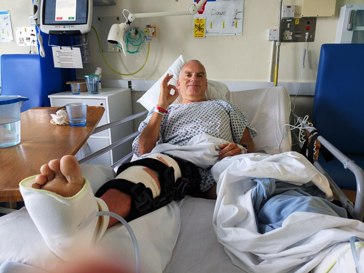
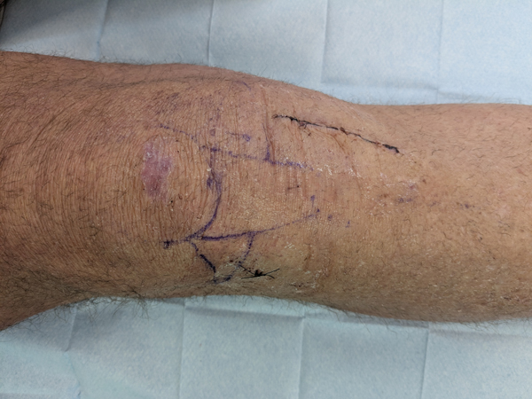
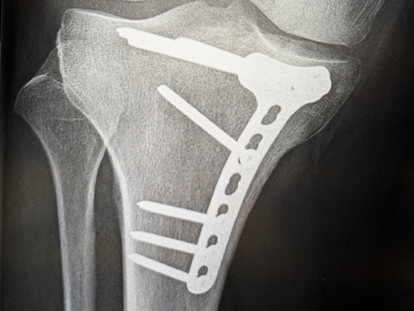

Friday 17th July I woke up in a lot of pain and unable to put any weight on my right leg. At some point on the way home last night, I had fallen over and done quite a bit of damage to my knee. It was very painful to move and I could not really do a lot apart from sit in the room feeling sorry for myself while Roz was at the pool. We had planned to cycle to the two Dutch breweries this afternoon but it was instantly obvious that this was not going to happen.
By 2pm there was no sign of things improving and we decided I needed to go to hospital. After being wheeled to the car in an office chair from the room, Roz drove me to Luisenhospital a couple of miles away. Everything was a bit slow here but I eventually saw a doctor who sent me for an x-ray. After more waiting around the doctor confirmed that I had fractured part of my tibia. There was not a lot they could do about this apart from put my leg in a brace and give me a pair of crutches. I may need an operation to put screws in when we get home but will need a CT scan to determine this.
The whole thing took almost five hours and cost us approximately €200, mainly for the brace and crutches. It does mean that I will have to rest for the next six weeks or so and Roz is going to have to drive the car all the way home. It is particularly frustrating as I seem to have got back to full fitness following my cancer treatment and have really enjoyed the cycling on this trip.

Monday 21st July Got to Basingstoke A&E at about 11:00. The first part of the day was fairly quick. I was registered and saw a GP very quickly. Another doctor then sort of took over and got an x-ray sorted out. We then waited for an orthopaedic doctor who confirmed the German diagnosis and that I would need an operation. I was sent for a CT scan and was eventually told that I would be able to have the operation tomorrow. I was pretty devasted by this point as they said it would be six weeks until I can put any weight on it, twelve weeks until I would be able to put all my weight on it, and up to a year before I will be able to run again. I was aware that it was broken but was not expecting such a long recovery period.
There was a lot of waiting around by this stage but eventually I was given the option of staying on a ward tonight ready for the operation tomorrow. We both agreed that this was the best option and by 5pm I was settling into Ward D4 again. Roz went back to Kingsclere to get me a few things for the next couple of days and returned just before the end of visiting time.
Life in D4 had not changed that much since I was there in 2022 ensuring that it was just about impossible to get much sleep. Apart from the noise from the other patients, there were a lot of tests being done on me including an ecg and pre-operation questionnaires, etc. Eventually got to sleep at about 2:30am
Tuesday 22nd July A frustrating day to say the least. I was awake at about 5:30 and was given a bed-bath. I was not allowed breakfast as I was on a nil-by-mouth regime since midnight.
I was visited by the anaesthetist during the morning and was told that the operation should happen later rather than earlier but should be early afternoon. I was reasonably comfortable reading all day but as the day wore on, I was getting more and more concerned that I was not hearing anything about what time they would be operating. At 2:45 a nurse tried to find out what was going on and by 3:15, they confirmed that I would not be having the operation today but could go home and come back on Thursday.
Wednesday 23rd July Another frustrating day. There was not a lot I could do all day apart from sit around waiting for a phone call from the hospital. I rang them at 1:30 and was told that the list was not finalised and I should hear within the next couple of hours. I phoned back a couple of hours later and was told that I was on the waiting list but I was not going to have the operation tomorrow.
In between all of this we were trying to find out if I should be on anti thrombosis medication. I had injected myself on Saturday and Sunday with stuff that I had been given in Germany but had not any since. Phone calls to the ward I was on together with advice from the GP seemed to suggest I should be taking them but no-one was sure and everyone just said I should ask at A&E. We started to drive towards A&E when I thought about phoning 111. They agreed that I probably should be on them but also suggested contacting the team in charge of my care. As we had no idea who that really was, we were a bit stuck. We eventually gave up and decided to try and resolve it tomorrow.
Thursday 24th July We had a phone call at about 7 from the hospital saying that they have had a cancelation and I may be able to have the operation this afternoon. I was told not to eat anything and that they would call back later. They called back at about 10:30 and told me to go straight to the hospital. By 11:00, Roz dropped me at the main entrance again. I walked back up to D4 and "checked in". I was in Bay 1 this time which only had four beds and appeared to be a lot quieter than where I was a couple of days ago.

After filling in all the forms and answering all the same questions I had answered a couple of days ago, I was taken down to the theatre just after 1. Things happened fairly quickly after that and by 3:30ish, I was waking up in recovery. The operation had all gone well. I was taken back to the ward where Roz returned a few minutes later. She went after a couple of hours and I then discovered that the bay was not going to be as quiet as I had hoped. Another night without much sleep.
Friday 25th July I was awake by 5 after getting a couple of hours sleep. I saw my surgeon just after 8 and someone from the physiotherapy team not long after. Both seemed happy with everything which meant I would be able to go home today. The knee was a bit sore today and for the first time since last week I was feeling pain around the break. I did seem to be getting quite a lot of painkillers though so things were not too bad. I was not in any hurry to go home and spent the morning reading or watching the cricket.
After lunch, they decided they wanted to get rid of me. Someone appeared to take me down to the "discharge lounge" at about the same time that Roz arrived to collect me. I was given a bag of blood thinners and pain killers before being sent home.
Getting home and back upstairs was all quite painful. The anaesthetic had well and truly worn off and any movement hurt more than it had in the last week. I made it upstairs, got into bed and did not do a lot else for the rest of the day.
Saturday 26th July A bit of an improvement today. Already the area around the operation area was starting to calm down a bit. I took a painkiller at 5am when I woke but did not need another until 12 hours later. I made it downstairs for most of the day. Once I made myself comfortable and did not have to move much, I was not in pain. By the evening, I was in pain when moving but not too bad.
Sunday 27th July Another slight improvement. I can already bend the knee slightly. No pain killers required today for the first time.
Thursday 31st July I had my first appointment with physiotherapy this morning. The last few days I have continued to make progress and have been pleasantly surprised at the rate of improvement. I am still not in any pain and have am able to bend the knee a lot more than I could on Sunday. The physiotherapist was quite positive about it all and quite happy about the way things are progressing. I was given more exercises to do and will see her again on 8th September.
Friday 8th August Back to hospital today for a "wound check". A nurse removed my bandages and the dressings and removed two stitches from one of the wounds. All appears to be OK.

I also saw an orthopaedic consultant who was happy with the progress. I have been told not to put much weight on it for four weeks until the next consultation.
Thursday 4th September Back to the fracture clinic this morning. I was sent for an x-ray before the appointment at 8:50. The doctor who had seen the x-ray told us that the fracture has just about completely healed and that I can now put weight on the leg again. He told me that I should keep wearing the brace for the next six weeks to protect it but everything seems to have gone as well as we could have hoped. I should still use the crutches for support but can start walking normally again.

He was quite happy to show us the before and after x-rays so we could see what has actually been put into my leg for the first time. He also confirmed that there is no reason why we can not fly to Greece on Monday.
Monday 8th September Second physio appointment with Sammy. She seemed fairly happy with everything and gave me a new list of exercises to do.
I went straight from the hospital to Gatwick for our flight to Kos. Once in Greece, I did not use the crutches at all and only used the brace when we went out in the evening or when we were traveling. I stopped using the brace completely after 8 days or so. I was able to walk normally and after about week, I started doing my 10,000 steps every day. I managed to get up to the castle in Leros a few times so all in all, it was a lot better than I had expected it to be at this stage.
Wednesday 8th October Another physio appointment, this time with Lotty. Again, everything seems to be going in the right direction and there are no obvious signs that I have done any damage to it while walking in Greece. I have a new set of exercises to do and come back again in four weeks.
Thursday 16th October Another appointment at the fracture clinic this morning. I had another x-ray which showed that my leg is almost 100% healed. I was discharged and referred to PIFU in case there are any issues in the next six months.
I was told that I could resume normal activities and that I could start running again. Very good news!
Friday 17th October Exactly three months since breaking my leg, I was able to run 5Km!!